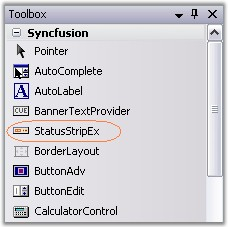
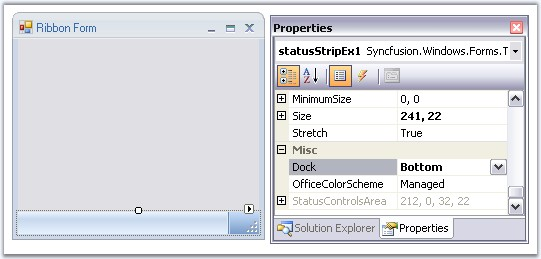
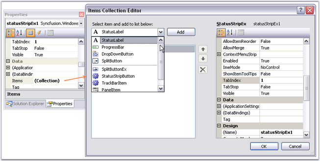

Through Designer
The StatusStripEx can be added to the form by dragging a StatusStripEx control from the Toolbox. It can be docked to the bottom of the RibbonControlAdv.

Figure 1403: StatusStripEx in the Toolbox
Dock the StatusStripEx control to the bottom using Dock property.

Figure 1404: Docking StatusStripEx to Bottom
Adding Items to the StatusStripEx
Access the Items property of the control, to open the Items Collection Editor. Use this editor to add customized StatusControl items. The Editor will let you modify the look and feel of the items using the properties provided on it right side.

Figure 1405: Adding Items through Items Collection Editor
 Note: A shortcut to add the
ToolStripStatus Items is through Tasks Window. See Smart Tag options to know more.
Note: A shortcut to add the
ToolStripStatus Items is through Tasks Window. See Smart Tag options to know more.
Through Code
StatusStripEx can be created programmatically using the code below. This code snippet adds a ToolStripStatus Label to the StatusStripEx control.
|
[C#]
using Syncfusion.Windows.Forms.Tools;
//Declaring the StatusStripEx and ToolStripStatusLabel private Syncfusion.Windows.Forms.Tools.StatusStripEx statusStripEx1; private System.Windows.Forms.ToolStripStatusLabel toolStripStatusLabel1;
//Initializing the StatusStripEx and ToolStripStatusLabel this.statusStripEx1 = new Syncfusion.Windows.Forms.Tools.StatusStripEx(); this.toolStripStatusLabel1 = new System.Windows.Forms.ToolStripStatusLabel();
//Adding ToolStripStatusLabel to StatusStripEx this.statusStripEx1.Items.AddRange(new System.Windows.Forms.ToolStripItem[] { this.toolStripStatusLabel1}); this.Controls.Add(this.statusStripEx1);
//Docking the StatusStripEx to Bottom this.statusStripEx1.Dock = Syncfusion.Windows.Forms.Tools.DockStyleEx.Bottom; |
|
[VB.NET]
Imports Syncfusion.Windows.Forms.Tools
'Declaring the StatusStripEx and ToolStripStatusLabel Private statusStripEx1 As Syncfusion.Windows.Forms.Tools.StatusStripEx Private toolStripStatusLabel1 As System.Windows.Forms.ToolStripStatusLabel
'Initializing the StatusStripEx and ToolStripStatusLabel Me.statusStripEx1 = New Syncfusion.Windows.Forms.Tools.StatusStripEx() Me.toolStripStatusLabel1 = New System.Windows.Forms.ToolStripStatusLabel()
'Adding ToolStripStatusLabel to StatusStripEx Me.statusStripEx1.Items.AddRange(New System.Windows.Forms.ToolStripItem() {Me.toolStripStatusLabel1}) Me.Controls.Add(Me.statusStripEx1)
Docking the StatusStripEx to Bottom' Me.statusStripEx1.Dock = Syncfusion.Windows.Forms.Tools.DockStyleEx.Bottom |
A sample which demonstrates the creation of StatusStripEx control and adding ToolStripStatus Items are available in the below sample installation location.
..\My Documents\Syncfusion\EssentialStudio\Version Number\Windows\Tools.Windows\Samples\2.0\Office2007 Controls\Office2007Controls